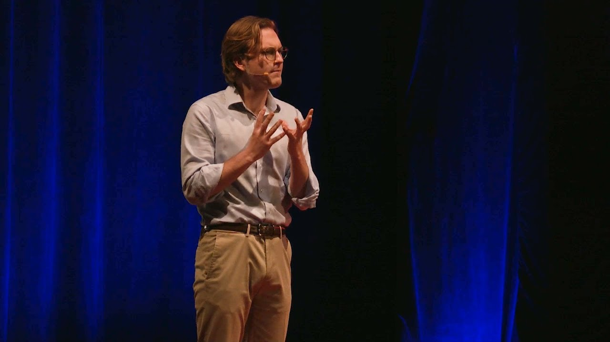

Quinn Halleck is a director and producer at the front edge of AI in film and television. His mission is simple: use the newest tools to make the stories the system would never greenlight, and make them at a scale that used to take a whole studio.
He came up the traditional way, mentored by Michael Bay and producing alongside Mark Wahlberg, DJ Khaled and Jeremy Irons, then rebuilt that playbook around AI. At Fox he was employee one of FoxNXT, the studio's AI department, helping architect and build it from the ground up and overseeing AI work on The Masked Singer, Baywatch and Fear Factor, which made him one of the first directors to put AI-driven content on broadcast TV. For TMZ he produced Celebrity Crime Scene, an AI-recreated true-crime pilot that hit Hulu's Top 10 twice.
His short Sigma_001 took him to Cannes to speak on AI in film, and his TEDx talk is the short version of the argument. His horror short From Where It Hides is distributed by ALTER; his work has been covered by the LA Times, KQED and AFP. Today he runs Moire Media, an AI-native studio in Los Angeles, where everything on this site is made.
